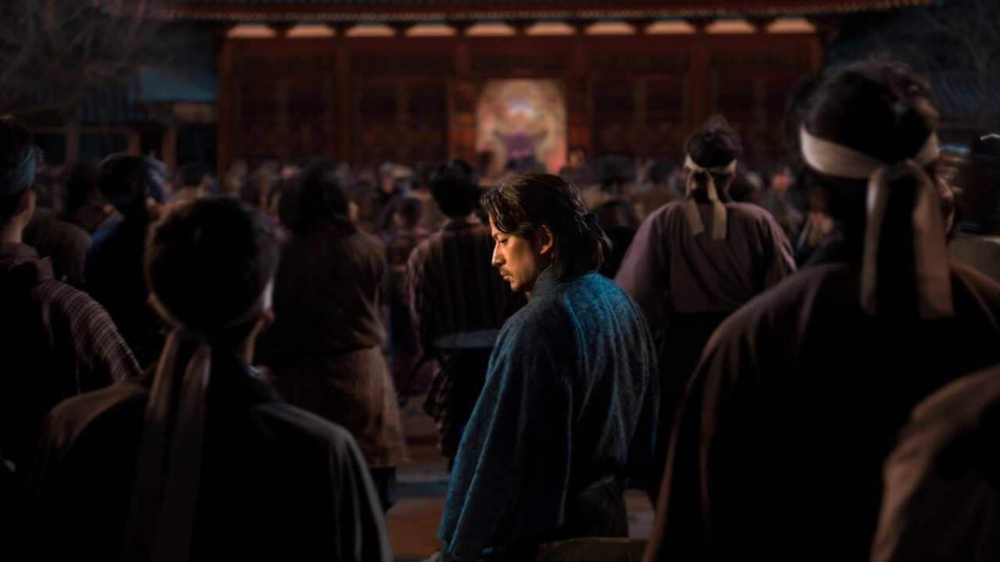

Quem somos?
Nós somos uma congregação de mentes curiosas e entusiastas dedicados a desvendar as camadas mais profundas da história e do espírito japonês. Mais do que meros admiradores de armaduras e espadas, somos estudantes da disciplina e da ética, buscando no passado dos samurais as chaves para uma vida de maior propósito, foco e integridade no presente.
Nossa Identidade e Missão
Nossa existência baseia-se na premissa de que a sabedoria milenar não deve ser apenas contemplada, mas vivida e integrada. Somos o ponto de encontro entre o rigor acadêmico e a paixão pela filosofia prática, onde cada membro contribui para a construção de um saber coletivo.
- Exploradores da Verdade: Buscamos a realidade histórica por trás dos mitos, separando a fantasia da dura e bela trajetória dos guerreiros do Japão.
- Praticantes da Disciplina:alorizamos o autoaperfeiçoamento constante, inspirados pela busca da perfeição técnica e espiritual dos antigos mestres.
- Guardiões da Tradição:Atuamos como uma ponte cultural, preservando a essência do Bushido e das artes zen para que suas lições de honra e respeito nunca se apaguem.